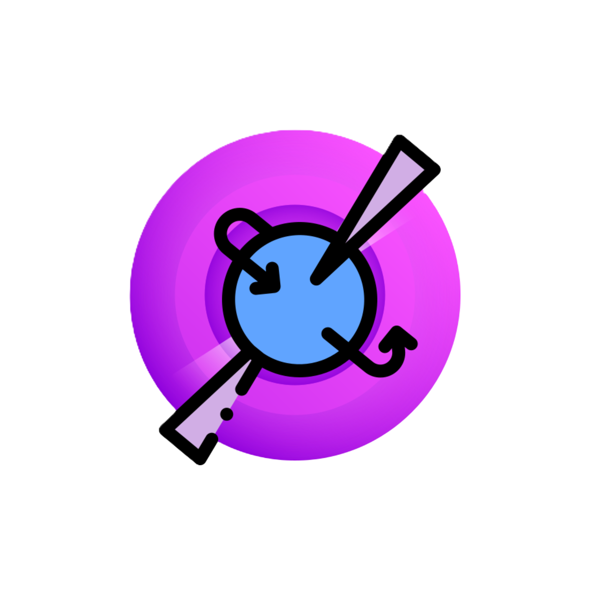
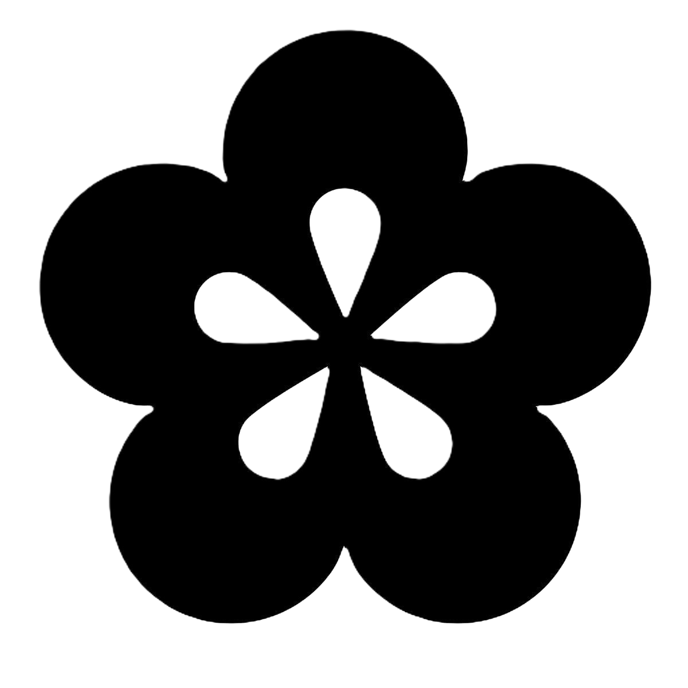

Workspace
Orbit AI
Chat, files, voice, agents, automations, settings, billing, and artifacts.
Orbit AI is the center. Around it sit model routing, desktop actions, browser context, developer access, and creative generation tools that make the product useful in real workflows.
Each surface should have a clear purpose. Orbit avoids turning every feature into a separate maze and keeps the account, billing, and support model centered.
Chat, files, voice, agents, automations, settings, billing, and artifacts.

Premium model routing and fast task handling for eligible users.

Image generation for visual ideas, concepting, and content exploration.